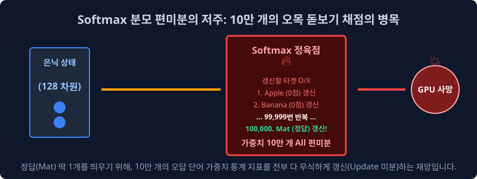
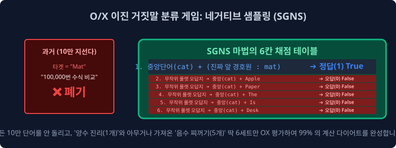

5.4 네거티브 샘플링 (SGNS) 근사 기법: 확률 모델의 이진 다운사이징
출력 계층의 Softmax 비선형 활성화 함수 연산량 폭발 문제 때문에 구글의 천문학적인 최신 딥러닝 서버 파이프라인마저 OOM(Out of Memory)으로 마비되는 태생적인 데이터 매핑 위기를 막기 위해, 구글 엔지니어 연구팀이 창안한 확률론적 수학 트릭 모델이 있습니다. 전체 10만 개 사전 단어 중 극소수의 무작위 ‘노이즈(Noise) 오답’ 만을 서브샘플링하여 이진 모델링 체계로 변환하는 마법의 차원 다이어트 기법, SGNS (Skip-Gram with Negative Sampling) 의 통계학적 연산 진실을 파헤쳐 봅니다.
5.4.1 출력 역전파 병목: Softmax 가중치 통계의 지수적 폭발 현상
전 챕터에서 다룬 Word2Vec 알고리즘 단어망 통과 매핑의 파이프라인 상 마지막 극단적 연산 병목 구간은 바로 소프트맥스(Softmax) 계단 통과와 오차 역전파(Backpropagation) 파라미터 미분 편향 구간이었습니다. 이는 훈련망이 중간 타겟 시드 [Cat] 벡터 하나를 던져서 옆에 기하학적으로 어울려야 할 [Mat] 이라는 문맥 단어를 찾아내기 위해, 거대한 다중 클래스 분류 신경망(Multi-class Classification)을 거쳐야 하는 초기 Skip-gram의 맹점입니다.

네트워크 모델이 저 Mat이라는 단 하나의 올바른 정답 확률 수치를 1회 경사 하강법 갱신(Weight Update)시키기 위해, 수학적으로는 출력층 거대 뒷단에 도열해 있는 전 구간의 10만 개 종류의 모든 영어 사전(Vocabulary) 가중치 매트릭스를 일일이 메모리에 몽땅 적재하여 시그모이드/소프트맥스 미분 계산 편미분 통계 연산을 돌려 타겟 오차를 산출해 내야만 합니다.
Apple출력 노드는 0% 수렴 오답 처리 (미분 갱신 가동 $\dots$)Student출력 노드도 0% 수렴 오답 처리 (미분 갱신 가동 $\dots$)Mat출력 타겟 전구는 100% 무한 가점 투척 (미분 갱신 펌핑 $\dots$)
이처럼 $V$(어휘 전체 크기)가 10만 단위를 가뿐히 넘어서는 이 거대하게 무거운 편미분 다중 스위치 연산 레이어를 딥러닝 미니 배치(Mini-batch) 단계마다 수천수만 번 루프 회전시키면, 최첨단 GPU 서버의 VRAM 마저도 과열과 함께 연산 지연량(Latency) 병목 현상을 유발하며 시스템 전체가 지수적으로 셧다운 될 수밖에 없었습니다.
5.4.2 확률론적 근사 모델링의 혁명: 네거티브 샘플링 (SGNS)
이러한 지수적인 컴퓨팅 전력 연산 낭비 현상을 혁파하기 위해 구글의 머신러닝 연구진은 정보 통계학 논문을 기반으로 한 천재적인 역발상 아키텍처 아이디어를 도출해 냅니다.
“비효율적인 10만 개의 전체 텐서 단어 가중치를 모델 안에서 모두 갱신하며 연산 백트래킹(Backtracking)을 강요할 필요가 없다! 그냥 10만 개의 어휘 도메인 중에서 정답과 완전히 무관한 무작위 노이즈(Noise) 오답 단어 $k$개 (보통 $5\sim20$개)만 네거티브 룰렛 샘플링으로 추출하자. 그래서 원래 타겟이었던 양성 정답(Positive) 1개와 음성 쓰레기(Negative) $k$개의 표본만 모아, 기계가 이 극소수 데이터만으로 참 거짓 이진 분류 채점망(O/X Binary Evaluation)을 치르도록 문제를 속여버리면 수학적으로 거의 동일한 모델 최적화가 증명된다!”
이것이 Word2Vec 아키텍처를 NLP 임베딩의 최강자의 반열에 올린 핵심 최적화 구동 엔진 통계 모델, SGNS (Skip-Gram with Negative Sampling) 기술입니다.
5.4.3 차원 축소 수술: 다중 병렬 클래스(Multi-class) 분류에서 이진(Binary O/X) 모델링으로 변환
기존 모델이 매 템포마다 10만 번 지선다형 거대 다중 객관식 시험표 소프트맥스 방정식을 풀어야 했다면, SGNS 모델은 신경망 뇌의 손실 함수(Loss Function) 계산 방식을 갑작스럽게도 아주 가벼운 단순 이진 교차 엔트로피(Binary Cross-Entropy) 트릭 치환 게임으로 축소 시켜버립니다.

- 테이블 중앙 타겟팅 (진짜 양성 Positive 세트 1개): 현재 모델이 연산 중인 윈도우 시야(Window Span) 스코프 안에 들어있던 실제 문서 문맥 속 단어 한 쌍
(Cat, Mat)$\to$ 이 두 단어는 서로 실제 문맥 코퍼스에서 병렬로 나타난 양성 세트니까 무조건 모델 아키텍처 레이블 학습에서 긍정 지표 [True 참 (1)] 판정을 내리도록 유도. - 거짓말 파라미터 더미 (오답 Negative 세트 무작위 $k$개 확률 샘플링): 구글 데이터 사전 전체 10만 개 유니버스 어딘가에서, 문맥상 아무 관련도 없는 완전히 독립적인 단어 $k$개($5$개)를 정보 엔트로피를 통해 무작위로 추첨해 강제 매핑합니다.
(Cat, Apple),(Cat, Pencil),(Cat, President)$\dots$ $\to$ 이 쌍들은 확률적으로 애당초 같은 문맥에 붙어있지 않았으므로 기하학적으로 동의어 코사인이 엮일 수 없습니다. 따라서 무조건 음성 연결 오답 타겟 레이블 [False 거짓 (0)] 패널티를 퍼부어 짓눌러버림!
5.4.4 연산 파퓰러 병목의 비약적인 99% 단축 마법 성취
위 상황처럼 시스템의 다변수 손실 함수 타겟 평가를 억지 O/X 이진 거짓말 게임 모식도로 치환해 버린 연산 레이턴시 축소 효과의 결과는 확률 수학적으로 대단히 충격적이었습니다.
- 과거 다중 클래스 (Softmax): 단 1개의 벡터 문제를 추론할 때마다 전체 사전 사이즈 10만 개 종류의 출력층 가중치 열($W’$)에 대한 편미분 미적분 수식망을 전원 전부 타협 없이 가동해 활성화 맵을 도출해야 했습니다.
- SGNS 차원 축소 마법: 이제는 추출된 오답 $K$(5개)와 찐 정답 1개(Positive), 단 6개의 국소 타겟 벡터 이진 교차 엔트로피(Binary Cross-Entropy) 가중치 모의 계산과 미분 연산 조절망만 컴퓨터가 아주 잽싸게 가동하고 해당 스텝의 최적화를 종료해 버립니다!
이는 기존 역전파 연산 트래픽 오버헤드 구조 대비 스케줄 연산량이 무려 역대급 초효율 기하 폭인 $\frac{1}{16000}$ 수준 밑으로 단숨에 떨어지는 극강의 시스템 다이어트 가성비를 뿜어냅니다.
5.4.5 네거티브 노이즈(Noise) 추출망의 페널티 수학 체계 (빈도 정규화)
그런데 가짜 오답 더미 $k$개를 사전에 구축된 10만 어휘 데이터 프레임망에서 무작위 확률 주사위로 픽업해 올려올 때, 모든 단어들을 1/N 의 동등한 공평 확률 보정으로 샘플링 추출하는 것이 절대로 아닙니다!
[!NOTE]
💡 구조 분석: 고빈도 불용어(Stopwords)를 제거하는 페널티 룰렛 스케일링 체계노이즈 오답 더미를 추첨하는 확률 분포(Noise Distribution) 다트판 룰렛의 면적 할당 크기는 “각 단어가 전체 문헌 코퍼스(Corpus)에서 평소에 얼마나 자주 집중적으로 등장했는가(단어 관측 빈도수 분포 기준, $\text{Frequency}$)” 에 정비례 통계학적 지수로 조절되어 설계됩니다.
- 즉, 문서 텍스트계의 우주적인 관사 스팸 단어 집단인
The,a,is등의 의미 없는 결합 토큰 놈들은 노이즈 룰렛판에 할당되는 차지 면적이 어마어마한 % 사이즈로 부풀려 확충 잡혀있습니다.- 따라서 컴퓨터가 랜덤 노이즈 시스템을 던져서 가짜 오답 모델을 골라 추출할 때마다, 이 쓰레기 관사 잡초 집합 놈들이 주로 가장 높은 빈도 탓에 매번 억울하게 오답(거짓, False 0 페널티) 결합 모델의 희생자로 미친 듯이 많이 찍혀서 네거티브 무대 위로 멱살 잡혀 불려 올라옵니다.
그 시스템 연산의 결과는 어떻게 확립될까요? 끊임없이 강제적인 거짓(0% 수렴) 판정 페널티 매를 인공지능 은닉층 모델 루프 안에서 가장 많이 수십만 대 얻어맞으며 해당 단어의 벡터 임베딩 파워 체계가 무한정 바닥으로 삭감 조절 깎여나가게 됩니다! 결국 모델 훈련 스텝이 모두 종료되고 매핑 투사층을 열어보면, 저절로 이들 쓸모 없던 고빈도 불용어 잡초 단어들의 벡터 임베딩 좌표 매핑 위치는 알아서 의미망 큐브 구석탱이 변방으로 전락하여 자연 도태(Decay, 정규화) 되어버리는 눈부신 기하학 모델 진화가 성취됩니다! 무거운 TF-IDF 수식을 굳이 쓰지도 않았는데 딥러닝 랜덤 노이즈 룰렛 세팅 구조만을 치밀하게 설계 조율하여 불용어를 자연 소멸 응징해 버리는 아주 극도로 우아한 정보 최적화 시스템 사상입니다!
이렇게 네거티브 샘플링(SGNS) 이라는 다차원 천재 최강 알고리즘 엔진을 무장한 Word2Vec은 전 세계 NLP 시스템 학계를 단숨에 점령하고 수년간 제국을 지배했습니다. 하지만, 방심한 틈에 또 다른 거대한 글로벌 테크 라이벌 집단인 페이스북(Meta AI 연구진) 군단이 Word2Vec이 잡지 못하는 최후의 아킬레스건, ‘아주 커치않고 징그러운 OOV 철자(Sub-word) 결함 데이터 사상’ 한 가지를 파고들어 반정을 시도합니다. 다음 장에서 스펙터클한 학술 경쟁이 벌어집니다.